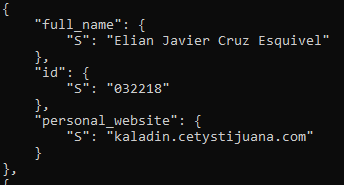

Click on each question to open the collapsible div :)
Create a static website using AWS S3 and explain in great technical detail what you did
=====
********
Create the bucket
-----
In order to create a static website, it was required to understand that such website will
be stored and hosted inside an S3 bucket, therefore, the first thing required to do is to create the bucket.
To do so, the following AWS CLI command was used:
```shell
aws s3api create-bucket --bucket kaladin.cetystijuana.com --region us-east-1
```
This command can be splitted into these different parts
- **aws** : _Which is the command used to indicate that we're using the services provided by the AWS CLI_
- **s3api** : _Makes reference to the inner AWS service to use, in this case, it's a reference to s3api, which exposes the whole functionality provided by s3, as opposed to s3 which offers a limited set of things that can be done with it_
- **create-bucket** : _As defined previously, it is required to create a new bucket to actually be able to host a website with it; by using the *create bucket* option and passing as paramenter the new bucket name (namely --bucket kaladin.cetystijuana.com), we are just saying that we want a new bucket with such provided name_
- **- - region** : _Allows us to specify the region where the S3 bucket will reside, in other words, the physical geographic area where AWS data centers will interact with the new bucket. In this case, that region makes reference to us-east-1_
Change bucket policies
-----
In order to configure the newly created bucket as one that can serve a static website, its policies should be changed for a series of reasons:
- Define the level of permissions a public user (someone that tries to access the website from the internet) has
- Define where those permissions apply
- Link the policy to the new bucket
To do so, a new __json__ file was created to store such new policies:
```js
{
"Version":"2012-10-17",
"Statement": [
{
"Sid":"PublicReadGetObject",
"Effect":"Allow",
"Principal":"*",
"Action":"s3:GetObject",
"Resource":"arn:aws:s3:::kaladin.cetystijuana.com/*"
}
]
}
```
- **Version**: Here we're saying that we want to use the _2012-10-17_ policy version for AWS, which is the latest and allows AWS to understand what shoudl contain and how to apply the rest of the content of the object
- **Statement**: Is just a list of objects, where each object will be its own set of policies
- **Sid**: References the id or name assigned to the new policy, in this case, the name is just exactly what the new policy is doing, namely to give public access to get the objects of the bucket
- **Effect**: Defines what is to be done with the policy, can be either Allow or Deny
- **Principal**: Specifies over who these policies take place, in this case, the star '*' means all or public
- **Action**: Tells s3 when the defined effect will take place for the ones defined in Principal, here we're just saying that it will be applicabe when we want to get an object (something inside of) from the bucket
- **Resource**: Is the path for the s3 bucket, we do so by providing it through the arn or Amazon Resource Name, which uniquely identifies each AWS resource. It format is as follows:
- **arn**
- **partition**: Indicates the group of aws regions, it can be aws-us-gov (for US services), aws-cn (for China services) or in this case, aws
- **service**: We're using s3, hence that's the service referenced
- **region**: In this case is not needed to specify
- **account-id**: In this case is not needed
- **resource-id**: We use a wildcard to define the region and account-id by adding the ::: before the bucket name because it includes such information. AFter that, we just write the name of the bucket adding at the end a forward slash and a star (/*) to indicate that it will apply to all the contents inside the bucket
After this has been done, we just need to add the json contents to the bucket's policies, to do so:
```shell
aws s3api put-bucket-policy --bucket kaladin.cetystijuana.com --policy file://policy.json
```
Here we're just saying that we want the bucket _kaladin.cetystijuana.com_ to use the policy on the previously described json file
- **put-bucket-policy**: Does exactly hat it says, adding the referenced policies to the bucket
- **- - bucket**: The desired bucket
- **- - policy**: Here it could have also been passed a json object written directly on the terminal, but since there's already a json file, it is just needed to reference it by specifying that it is a file and its path; since it is in the same path as the working directory, just passed the file name
To verify that the policies were updated, the following command can be used to get the policies associeated to the bucket
```shell
aws s3api get-bucket-policy --bucket kaladin.cetystijuana.com
```
Where **get-bucket-policy** just references the api service to use. This command should return the policy.json file contents on the terminal
With this, now the contents of the bucket are publicly available to be seen, however, the bucket is still empty
Add contents to the bucket
-----
First, it is needed to set the website configuration for the bucket, to do this:
```shell
aws s3 website s3://kaladin.cetystijuana.com --index-document index.html --error-document error.html
aws s3api get-bucket-website --bucket kaladin.cetystijuana.com
```
For the first command
- **s3**: Here we use the s3 instead of s3api since we just want to modify a hugh-level property
- **website**: Then, we call the website option to configure the website
- **Bucket path**: Since we're using s3, we pass the bucket path referencing its service just like if it were a file, namely the type (s://) and the location (kaladin.cetystijuana.com)
- **- - index file**: We provide the root file for the website to be rendered, in this and most cases, such file is named _index.html_
- **- - error file**: File to be displayed when an error occurs in the website.
For the second command:
- **get-bucket-website**: The option to get the website configuration details
After running these two lines of commands, the result should be a json defining the index and error files for the bucket.
After this, the bucket is configured but still empty, therefore, the website files should be uploaded to the bucket. Since I already had a project created, just navigated to the website were I had it stored (there, the _index.html_ and _error.html_ are in its root), and proceeded to sync the contents of the directory to the ones on my bucket, and since the bucket its empty, this action is analogous to uploading all my project for the first time.
To do so:
```shell
cd kaladin.cetystijuana.com
aws s3 sync . s3://kaladin.cetystijuana.com
aws s3 ls s3://kaladin.cetystijuana.com
```
Here we do the following:
- In the first command, we just change directory to the one that had my website's contents
- Then, we call aws s3
- **sync**: Copies and/or updates teh files in the directory to the ones in the referenced bucket
- **local path**: Defines the path from where to copy, a single point indicates the current directory
- **bucket path**: The path for the bucket where to sync.
- The third command allows to check if the contents were uploaded by listing the contents in the bucket through the linux **ls** command
After this, the contents will be uploaded and the only remianing thing to do is to visit the website by enetering the following in the browser:
```shell
http://[BUCKETNAME].s3-website-[AWS REGION].amazonaws.com/
```
In this case, just visit http://kaladin.cetystijuana.com.s3-website-us-east-1.amazonaws.com/
Link your website to a subdomain of cetystijuana.com and explain in great technical detail what you did
=====
********
In order to link the default given domain name of my website from http://kaladin.cetystijuana.com.s3-website-us-east-1.amazonaws.com/ to kaladin.cetystijuana.com/, a few investigation was needed to understand that the AWS service that allows a website to change/map its DNS is Route53, once this was understood, the only thing required to do was the following:
Get hosted zone
-----
First of all, Route53 is a DNS service provided by AWS; according to AWS, ahosted zone is a container for records, these records contain information about the traffic routing for a specific domain and its associated subdomains
therefore, to update the DNS configuration we must know under which hosted zone the S3 bucket is, the following command can be used to do so
```shell
aws route53 list-hosted-zones
```
Which in turn will return the hosted zones associated with the current AWS account, since I only have one associated website to my account, the only response should be the one regarding the website I need to configure
, which looks like this:
```shell
{
"HostedZones": [
{
"Id": "/hostedzone/Z03346142C3RKH191036Y",
"Name": "cetystijuana.com.",
"CallerReference": "RISWorkflow-RD:fc4e3528-b645-4b45-8c60-ea43b3e4363f",
"Config": {
"Comment": "HostedZone created by Route53 Registrar",
"PrivateZone": false
},
"ResourceRecordSetCount": 22
}
]
}
```
The only important matter here is the Id, which is displayed in the above snippet. Such Id will allow futher commands to reference the DNS configuration for the website kaladin.cetystijuana.com
Map the new subdomain through a CNAME record
-----
The next thing is to define a CNAME mapping through a json file as follows (created through _touch sub.json_)
```shell
{
"Comment": "Update record to add new CNAME record",
"Changes": [
{
"Action": "CREATE",
"ResourceRecordSet": {
"Name": "kaladin.cetystijuana.com",
"Type": "CNAME",
"TTL": 600,
"ResourceRecords": [
{
"Value": "kaladin.cetystijuana.com.s3-website-us-east-1.amazonaws.com"
}
]
}
}
]
}
```
Here we're doing the following:
- **Comment**: Just a way to reference what the change does in plain text
- **Changes**: A list of objects which define the actions to take place over a Route53 resource
- **Action**: Defines what is to be done, in this case, I want to create a mapping from the default domain name given to my website do a cleaner one linked to cetystijuana.com, therefore, it is defined as CREATE
- **ResourceRecordSet**: Defines an object that allows the DNS action to know where to take place
- **Name**: Defines the name of the record to be created, being the subdomain that I want my website to map to
- **Type**: In this case, the record type will be a CNAME since I want to set an alias or 'Canonical NAME' for the original one.
- **TTL**: Resource record cache time to live
- **ResourceRecords**: Upon whcih records will the action act, in this case, is a list of objects where each one contains a value that references the current domain name that we want to be mapped to the one defined in Name
With this file, the next thing is to tell Route53 to use its contents, for this we can just call the following:
```shell
aws route53 change-resource-record-sets --hosted-zone-id Z03346142C3RKH191036Y --change-batch file://sub.json
aws route53 list-resource-record-sets --hosted-zone-id Z03346142C3RKH191036Y
```
Where the first line is composed by:
- **route53**: defines that we're using the route53 service
- **change-resource-record-sets**: Is the operation to be done, which could be change, delete or as in this case, create a resource record set for the respective DNS
- **- - hosted-zone-id**: References the hosted zone where the DNS changes will take place
- **- - --change-batch**: Specifies the structure or file that defines the changes, in this case is the _sub.json_ file
To confirm, the second line uses the **list-resource-record-sets** operation on the reference hosted zone to get the records associated with such zone, this command returns a list of objects similar to _sub.json_,
therefore, the only work here is to look for a record created with that data.
If successful, we can just visit kaladin.cetystijuana.com and it will be succesfully resolved by the browser.
Add yourself to the list of students in cetystijuana.com
=====
********
In order to add myself to the list of students in the website cetystijuana.com, I followed these steps:
Download the cetystijuana.com resources
-----
I needed access to the source code, the only plausible way to get it was to retrieve it from its host bucket into my local machine.
```shell
mkdir jax
cd jax
aws s3 cp s3://cetystijuana.com/ ./ --recursive
```
Where
- The first line just creates a new directory named jax
- Then just change directory
- The following line copies the contents from the bucket to local:
- **s3**: Is a high-level operation, hence we can use s3 instead of s3api
- **cp**: Does the same as the _cp_ linux command, namely, to copy something from source to destination
- **source**: The path for the s3 bucket
- **destination**: The path were to copy the contents, here is just a **./** becasue I wanted it on the current directory
- **- - recursive**: I don't want only to copy the contents on the root of the bucket, I want all of the inner files inside the subdirectories and further levels, therefore I want the copy to traverse such dirs and copy them also.
After this, I'll have all the bucket content saved locally
Update the index.html
-----
To add myself to the list, I need to edit the file that renders such information, therefore I opened the _index.html_ file in a text editor and
added my information into it.
Then, to have my photo, copied a photo of mine to _/assets/img/team_ and named it elian.jpg, which I reference in the _img_ tag for my data
After that, I just needed to sync my changes to the original bucket, so I used the following:
```shell
aws s3 sync . s3://cetystijuana.com
```
Where
- **sync**: Uploads, updated and/or creates the modified files to the teacher's bucket, in this case, only the _index.html_ and my photo were synced
- **local**: The directory where the content are, in this case, the current directory or **.**
- **bucket**: The path to the bucket
After the files were synced, just visited cetystijuana.com and verified my info and picture were shown
Create an entry in the Students DynamoDB table using the cli
=====
********
Create contents
-----
First of all, and to ease the process, created a json file that would contain the desired data
```shell
touch student_db.json
```
Then added the following:
```shell
{
"full_name": {
"S": "Elian Javier Cruz Esquivel"
},
"id": {
"S": "032218"
},
"personal_website": {
"S": "kaladin.cetystijuana.com"
}
}
```
Where
- **full_name**, **id** and **personal_website** are the fields required by the instructions, each of them are mapped to an object.
Each object contains "S": "something", where "S" indicates that the field is of type String, and something just references the text that should go there, like my name, id, etc.
Upload the contents
-----
After the file was done, just did the following:
```shell
aws dynamodb put-item --table-name Students --item file://student_db.json
aws dynamodb scan --table-name Students
```
Where
- The first line puts the item into the DynamoDB table
- **dynamodb**: references the DynamoDB service
- **put-item**: Defines the operation, which in turn calls the following arguments
- **- - table-name**: The table to write into, in this case, it is called _Students_
- **- - item**: The data to upload, since I created a json file, I just referenced the file: _file://student_dt.json_
- The second line just serves to verify the data was put correctly into the table
- **scan**: Searches over a table
- **- - table-name**: The table to search in, in this case, it is called _Students_
After executing the second line I was able to see my data into the Students table

Watch the Not Just Code Monkeys by Martin Fowler and write your comments in your personal static website
=====
********
Regarding the lecture given by Martin Fowler (a.k.a. the Refactoring guy), I'd say I agree with most of the points he mentions, like the fact
that sometimes, when you're inside a SCRUM team (or software in general) and you're asked to do a ticket/jira, you're left aside as a developer and told that you have to
do only what you're told to; I've seen this behavior at work when some of my developer friends try to come up with better approaches to problems or bugs they are tasked to
solve, and due to lack of time because of a not-so-well planned sprint, they end up having to give up on their refactoring and just patch the code.
Another interesting point touched by Martin is the fact that sometimes people tend to underestimate the efect that has on people the understanding the impact that your code will have
when deployed in the real world. One thing that has impacted me a lot regarding this, is an annecdote of my work's VP of software, where he, having a strong background in
software and being the CTO of a divison of Ebay, decided one day to pack his stuff and start to work in something meaningful, where instead of worrying abour the next sales revenue, he was
worried in building a system that could impact the lives of people in a better way (in this case, dialysis machines). I clarely believe that people can choose to work wherever they want and
not be judged for it, but the actions that my VP took changed my perception of what an ideal work would look like, where I'm focused not only on the how and what a system does, but also in who it impacts and how that impact makes their life better than before.
And a final thought that I think is interesting to say the least is the athmosphere issue that Mr. Fowler mentions, I address it because I work in a relatively small team for a software department,
we're like 30-ish developers and testers, of which only around 4 or 5 are women. I think the environment in the team is great, but would be greater if it could be more diverse,
adding knwoledge and backgrounds from women that can do a similar or even better job than we currently do and close that gap that, as Martin said, is depriving the software sector of the intelligence and value of half of the population.